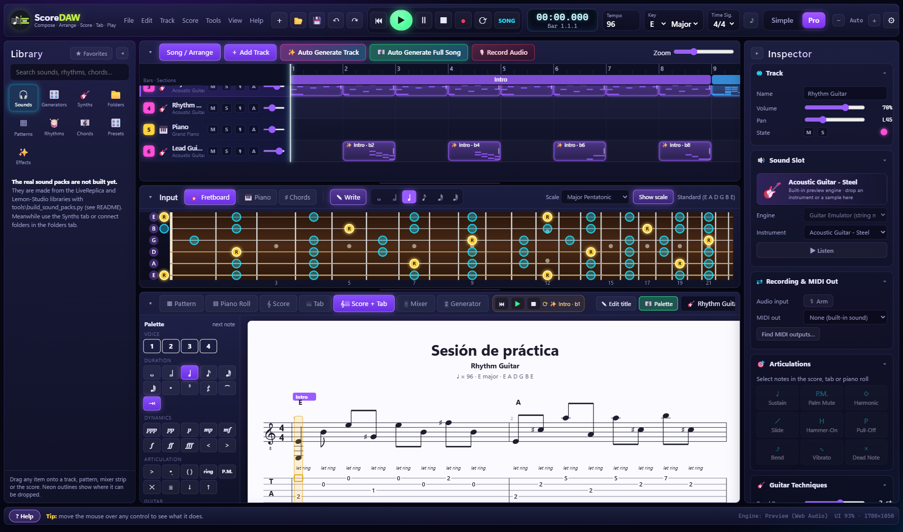
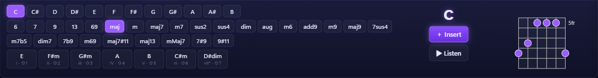
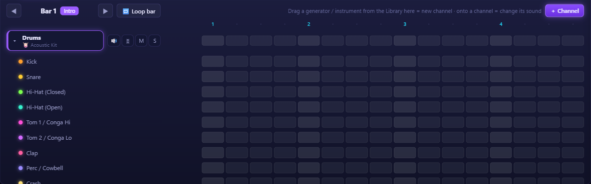
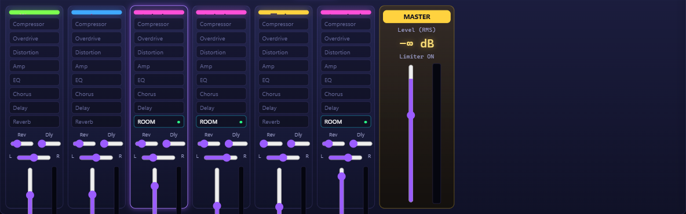
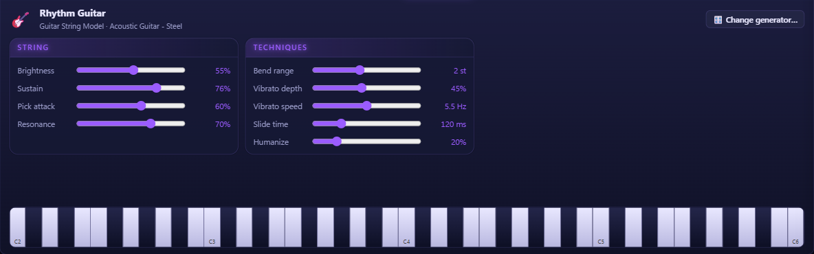
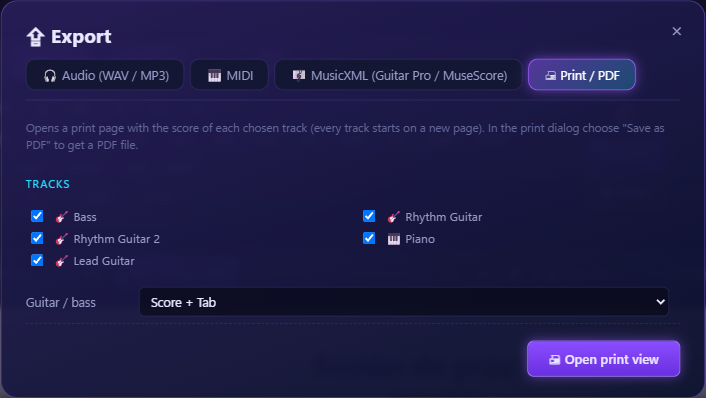

Top bar
Menus, file controls, undo, transport, position display, tempo, key, meter, interface size and Simple / Pro modes.
Write, generate, record and mix a song. Follow the chapters in order or use the contents to find a control. The labels in bold match the ones in ScoreDAW.


Menus, file controls, undo, transport, position display, tempo, key, meter, interface size and Simple / Pro modes.
Find and preview sounds, instruments, patterns, rhythms, chord progressions, presets and effects. Drag items to the target you want to use.
Tracks and blocks on a timeline, with Add Track, generation, recording and arrangement zoom controls.
Choose Fretboard, Piano or Chords, select a duration, and choose whether to write or audition notes.
Pattern, Piano Roll, Score, Tab, Score + Tab, Mixer and Generator.
Settings for the selected track, block or note. Configure sound, recording, MIDI and effects.
The bottom bar explains the control under the pointer. Alt+1 through Alt+5 toggle panels, and Alt+0 resets the layout. Choose Pro to show advanced controls.
The display shows elapsed time, bar, beat and step. During playback the score scrolls to follow the pink line, and the rack highlights the current step and the drum hits being played. Adjust Tempo, Key (tonic and mode), Time Sig. and the metronome in the top bar.
If ScoreDAW asks how to handle blocks, choose to keep each bar and trim or pad it, or keep the music in time and move the bar lines. Review the result before saving. You can undo the change.
| Tab | What you can do |
|---|---|
| Sounds | Browse available kits, instruments and percussion sounds. Audition a sound or drag it onto a track, a Sound Slot or a pad name. |
| Generators / Synths | Browse synth presets, samplers, string models, keyboards and percussion. Add one to the rack or replace a channel's instrument. |
| Folders | Connect a folder to browse your own sounds. After reloading, choose Reconnect if the browser requests access. Use the context menu to build a sampled instrument or kit from the filenames. |
| Patterns / Rhythms | Reuse patterns and grooves. Drag a pattern into the arrangement or choose a drum rhythm in the rack's Groove… selector. |
| Chords | Insert chords and progressions at the cursor or drag them into the editor. |
| Presets / Effects | Apply instrument and effect settings. Review the resulting chain in Inspector or Mixer. |
| Favorites | Show items you have marked as favorites. Use search to find instruments, rhythms and chords. |
Optional sound packs extend Sounds. If the app reports that packs have yet to be built, you can still use the included instruments and connected folders. The development project includes Build Sound Packs.cmd to prepare supported libraries installed on your system.
Linked patterns. A block marked ×N shares its notes or drum hits with other blocks. Choose Make unique before creating a variation that should play in only one place.
The audio clip context menu offers splitting, reversing and fades. Press S to split at the cursor when Arrange has focus. Audio clips and note patterns have their own editing controls.
Choose a fret and string. Turn on Write to insert the note at the cursor. Hold Shift to write a chord. Choose a scale and use Show scale to mark its notes.
Play the on-screen keys or use the computer keyboard. Change octave with [ and ]. Activate Write and select a duration to place notes.
Select the root, chord type and voicing. Audition the chord and place it at the cursor or use it to plan a progression. Shift+1 through Shift+7 selects degrees of the current key.
Choose a duration before writing. For existing notes, select them and change their values from the notation palette. The updated notes appear in the other editors.
Selecting a track switches Input to the fretboard for guitar or bass, and to the keyboard for other melodic instruments. You can also change the input tab manually.


Click a drum cell to toggle a hit. Hold Shift for an accent. Click a pad name to audition it or open its context menu to change the sound. For melodic channels, select a Step note option (chord root, full chord, key root or octave) and a duration. Clear bar clears the channel part. The pattern menu supports renaming, cloning, changing length, placing and deleting.

Click an empty cell to add a note. Drag a note to move it and drag its right edge to resize it. Hold Shift to add to the selection. Right-click a note to remove it. Use the toolbar to quantize to sixteenth notes or transpose by semitone or octave. Set note velocity in the lower lane.
During SONG playback, Piano Roll displays the currently sounding block on the selected track. Its playhead advances and active notes light up. Short patterns expand to fill the available panel width. In PAT mode, inspect the selected pattern.

Bar width adapts to notes and markings, and fast notes can be beamed by beat. A particularly dense bar may require horizontal scrolling. Rename the song with Edit title or File → Song title.
Creates a complete arrangement with sections and tracks. Ctrl+Shift+G.
Writes a part to fit the current song. Ctrl+G.

Generating a full song replaces the current arrangement. Save the project first if you want to keep it. Press Ctrl+Z to undo generation.
Use the Genre, Band and Guitarist tabs and their dropdown in both the welcome screen and the full-song panel. Names are alphabetical and genres are grouped by family. Changing the selected style loads its preset. Review tempo, instruments, vocals and techniques, then apply your own edits.
Expand Melody — what the lead may use to access techniques and the section plan. Lead guitar in the style of chooses the guitar vocabulary within the arrangement. For an instrumental Yngwie, Satriani or Vai piece, choose the artist under Guitarist and check Song → Instrumental. For Van Halen, use Band → Van Halen and review Kind of song and the lead plan.
Save the project to retain its generation recipe. This song #… restores the open song's options and Last #… reuses the previous seed. After generation, check the selected track. The application attempts to show the featured instrument with a suitable editor.
T.H. marks tapped harmonics in generated phrases that use them. A.H. marks artificial or pinch harmonics. Slide labels appear above the tab.

Open Auto Generate Full Song → Genre → Classical. The arrangement can combine piano, nylon guitar, violins and viola. Disable tracks to build a duet, a solo piece or a violin-only ensemble.

| Control | How to use it |
|---|---|
| Bach · Baroque invention | Subject, answer and imitative counterpoint with motivic development. |
| Vivaldi · String concerto | Returning ritornellos and featured episodes with a string focus. |
| Mozart · Classical chamber music | Question-and-answer phrasing and Alberti-style accompaniment. |
| Beethoven · Dramatic sonata | Exposition, development and recapitulation with contrasting rhythmic motifs. |
| Chopin · Romantic nocturne | A cantabile line over arpeggios and a more active central section. |
These profiles generate new compositions. Adjust instrumentation, key, density and form to develop each proposal.
| Control | How to use it |
|---|---|
| Lead instrument | Instrument carrying the main theme. Enable its track to make it available in the choices. |
| Interaction | Fixed lead retains one lead. Call and response alternates phrases with the answer. Lead rotates by section changes the lead across sections. Imitative counterpoint introduces an imitation of the motif. |
| Answering instrument | Choose the reply in call-and-response or imitative counterpoint. |
| Meter | Choose 4/4, 3/4, 2/4 or 6/8 before generation. |
| Violin and viola | Legato with occasional pizzicato combines flowing bowing with occasional plucked notes. Legato arco keeps bowed phrasing. Spiccato / short bow favors short attacks. Pizzicato uses plucked strings. |
| Solo technique | Trills and fast runs allows trills and runs. Fast runs favors runs. Lyrical phrasing keeps a more cantabile line. Complexity and the section determine when ornaments appear. |
| Instrument roles | Follow style uses the preset. Piano and guitar can play arpeggios, chords, countermelody or a blend of melody, arpeggios and chords. Bowed parts can sustain a background, play countermelody or broken chords. Tacit unless featured reserves a part for its featured passages. |
| Violin parts | Enable one to four parts. None disables violins. The number counts musical tracks. Each track can use a solo or section recording. |
| Violins only | Enables all four violin parts and disables piano, guitar and viola. Afterwards reduce the number of parts or enable other instruments as needed. |
| Introduction / Opening instrument | Choose an opening that varies with the idea, the full ensemble, one instrument or gradual entrances. Opening instrument selects who starts when applicable. |
| Cadenza soloist | Assign the featured episode to an active instrument, including guitar, or let it vary with the idea. |
| Lead by section | Assign the lead of each section or choose Follow interaction. Specific section assignments take precedence over automatic rotation. |
| Chamber instruments and effects | Enable tracks and choose sounds and effects. Solo Violin, Violin Section, Solo Viola and Viola Section use acoustic recordings. |
Set Piano as lead, use a blend role for Piano and Sustained background for the strings. Keep Fixed lead to hear piano melody and accompaniment together.
Press Violins only. Set Violin parts to two or four, choose Imitative counterpoint and select Violin II as the answer. Set Gradual entrances to hear each part enter.
Enable Classical Guitar and choose it as Cadenza soloist. Use a Standard form with an episode or cadenza and choose Fast runs. You can also assign Guitar directly under Lead by section.
A tie joins consecutive notes of the same pitch and sustains their duration across the barline. A bow slur groups notes into one phrase. A trill rapidly alternates a note with its neighboring scale note. Use S to solo a track while checking its phrasing, and the section plan to place featured passages.

To hear a sustained viola, let playback cross into the following measure. You can also start from a continuation measure. For smoother phrasing, choose Legato arco and regenerate. Balance Solo Viola or Viola Section with the lead using the Inspector fader.
Generator changes take effect when you create a new piece. Save a copy of the previous song before comparing arrangements.
| Panel | Controls |
|---|---|
| Track | Track name, volume, pan and state. |
| Sound Slot | Choose the engine and instrument, use Listen, or open the available Rig. Drag an instrument or sample here to assign it. |
| Selected Block | Properties of the selected pattern or audio block in the arrangement. |
| Recording & MIDI Out | Arm the audio input, find MIDI ports and choose the output and channel. |
| Articulations / Guitar Techniques | Select notes to apply an articulation. Set bend range and slide time. The Rig offers additional controls. |
| Pedalboard (Track FX) | Switch pedals on or off and adjust their settings. Rigs have their own effects. |
| Note Properties | Inspect properties of the selection, which is shared across the editors. |
| Plugins (VST3 / CLAP) | Load and edit external plugins when the native Windows engine is active. |

Balance volume and pan, solo a channel, compare the sound with and without effects, and adjust reverb and delay sends. Lower tracks that dominate the mix and watch the master meter to avoid clipping.
To automate, click A in Arrange until the volume or pan lane appears. Click to add points, drag to adjust, and right-click to delete a point. Automation is used during playback and export.

In 3x Osc, adjust oscillator waveform, mix and tuning, plus filter, ADSR envelope, LFO and glide as available for the preset. In Sampler, assign samples or zones and check their root notes. String models expose tone, attack, decay and technique controls.
Guitar Rig combines the instrument, pickup or recording, amp, cabinet, microphone, EQ and effects. Piano Rig adjusts keyboard type, pedal, strings, amp and effects according to the model. Wind Rig offers articulation, breath, vibrato and mute controls depending on the instrument. Some engines can play a light model while recordings load.
With the desktop edition and its native engine available, use Plugins (VST3 / CLAP) in Inspector. Select a plugin for the track, open its editor and save the project to keep the settings. The web edition supports built-in engines, samples and MIDI Out.
To drive an external synth, scan for outputs in Inspector → Recording & MIDI Out, choose the port and channel, and decide whether to hear the built-in engine too. General MIDI typically uses channel 10 for drums.

| Output | Contents and options |
|---|---|
.sdaw.json project | Arrangement, tracks, notes, parameters and samples used in the project. Use Save as to keep a separate copy and Open to restore it. |
| WAV / MP3 | Audio mix. Choose format, sample rate, WAV bit depth or MP3 bitrate. Normalization is optional. Enable Stems to obtain one WAV per track in a ZIP file. |
| MIDI | Notes, tempo, meter and arrangement metadata. Choose drum and repeat options for your destination. The receiving DAW assigns its own instruments to the notes. |
| MusicXML | Editable score for compatible notation software. Choose tracks and whether to include chord symbols and a tablature staff. |
| Print / Save as PDF | Select tracks and choose Score, Tab or Score + Tab. Open the browser print view and print or save as PDF. |
Keep the project file if you want to edit the song later. Browser autosave helps you resume in the same profile, and the saved file lets you open the song on another device.

Press Play to activate browser audio. Check the output device, master level, Mute/Solo and whether the playhead is over blocks. If a sampled instrument is loading, wait for it or try the light engine.
Allow pop-ups for ScoreDAW, select a melodic track and retry File → Print / Save as PDF.
Try View → Reset panel layout or Alt+0. Change interface size with Ctrl +, Ctrl − or Ctrl+0. Some controls appear in Pro mode or when a compatible track or note is selected.
ScoreDAW 0.2.0. Created entirely with AI using Claude (Anthropic) and ChatGPT (OpenAI), under Roberto's direction. ScoreDAW source code is distributed under the MIT license. Third-party components and recordings retain their own licenses.
| Resource | Authors and license |
|---|---|
| Guitar recordings | FreePats, Strat-style direct input (CC0 1.0). Gestalt LUR, alternate Strat (MIT). Karoryfer Samples / D. Smolken, Emilyguitar and Shinyguitar (CC0 1.0). Jeff Learman, Martin HD-28 (CC0 1.0). quartertone, nylon from Freesound pack 11573, edited by N. Brosowsky (CC BY 3.0). ScoreDAW uses converted and trimmed subsets. |
| Amplifiers and impulse responses | TONE3000, Neural Amp Modeler WebAssembly engine, captures and impulse responses (MIT according to the project notices). Neural Amp Modeler core by Steven Atkinson. |
| Keyboard recordings | Alexander Holm, Salamander Grand Piano V3 (CC BY 3.0). Jeff Learman, jRhodes3d (CC BY-NC-SA 4.0). Greg Sullivan, Wurlitzer EP200, with SFZ mapping by kinwie (CC BY 3.0). |
| Wind recordings | Versilian Studios, Samuel Gossner and contributors, VCSL tenor sax and VSCO-2 Community Edition trumpet played by Simon Hutchinson (CC0 1.0). |
| Bowed string recordings | VSCO 2 Community Edition, Versilian Studios, Sam Gossner and Simon Dalzell, with sample editing by Elan Hickler / Soundemote (CC0 1.0), for solo violin and violin and viola sections. University of Iowa Electronic Music Studios, Lawrence Fritts and the EMS team, for solo viola. Their collection permits use of its recordings without restrictions. Source notices are in the bowed-string credits. |
| MP3 export | lamejs, an adaptation of LAME under LGPL-3.0 according to the project notices. |
| Windows edition | Steinberg, VST 3 SDK (MIT). free-audio community, CLAP (MIT). Microsoft, WebView2 SDK (SDK license). |
| Optional packs | Integrations with the LiveReplica and Lemon-Studio libraries. Audio imported or converted from external libraries retains its authors' terms. |
In the project copy, see LICENSE, the Guitar Lab, Piano Lab and Wind Lab CREDITS.md files, and desktop/licenses/THIRD_PARTY_NOTICES.md for component details.